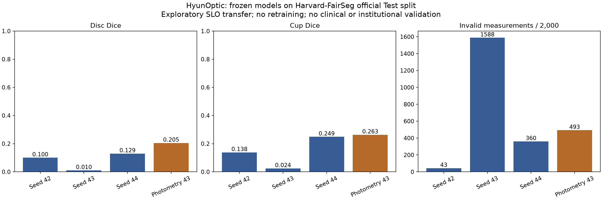

2026-10-25 KST · Actual local experiments · Research only
Harvard: 2,000 official test cases × four frozen models. Georgia Tech: 30-file archive-prefix pilot × four models, execution/geometry only. Duke: all 10 subject files audited and supplied automatic boundaries compared with two manual readers. Iowa: all60 original stereo views × four models, execution/geometry only. Columbia: patient-data download not verified. These are different tests, not five completed institutional model validations.
Original SLO grayscale replicated to RGB; whole-image letterbox384, fixed normalization and largest-disc postprocessing. Official Test files verified against SHA256 at pinned publisher HF revision. No training, contrast adaptation, source-mask repair or best-model selection.
| Model | Images | Dice n | Disc Dice | Cup Dice | vCDR n | vCDR MAE | Model failures | Reference failures |
|---|---|---|---|---|---|---|---|---|
| baseline42 | 2000 | 2000 | 0.1003 | 0.1379 | 1957 | 0.2586 | 43 | 0 |
| baseline43 | 2000 | 2000 | 0.0101 | 0.0237 | 412 | 0.3796 | 1588 | 0 |
| baseline44 | 2000 | 2000 | 0.1291 | 0.2485 | 1640 | 0.3592 | 360 | 0 |
| photometric43 | 2000 | 2000 | 0.2049 | 0.2630 | 1507 | 0.2014 | 493 | 0 |
Conditional vCDR error excludes unmeasurable predictions; Dice includes invalid predictions when references exist. Paired same-case MAE: fairseg: n=349, seed43 0.3753, photometry43 0.1792.

Interpretation: Read overlap and measurement availability together. A geometrically measurable prediction can localize the wrong structure. This unadapted color-fundus-to-SLO test does not establish reliable transfer; it does not isolate which imaging or preprocessing difference caused errors.
Our vCDR is vertical pixel-span ratio. The official FairSeg helper uses an area-ratio CDR: the error metrics are not interchangeable. No direct superiority claim against the FairSeg paper.
| Model | Fundus files | Measurable | Failed |
|---|---|---|---|
| baseline42 | 30 | 30 | 0 |
| baseline43 | 30 | 22 | 8 |
| baseline44 | 30 | 26 | 4 |
| photometric43 | 30 | 22 | 8 |
14 TREX-DME and 16 PRIME files, all complete fundus TIFF entries in the first 128 MiB compressed stream of each inner ZIP. This archive-order convenience sample contains repeated visits/eyes and filename variants from only two subject-level directories. It is not a representative sample or the full 1,268-image cohort. Individual extracted entries passed CRC32; source ranges and SHA256 are recorded privately. Full outer ZIP MD5 was not verified.
No OD/OC reference masks: geometry success is not anatomical correctness, diagnosis, segmentation accuracy or clinical utility.
| Distributed output | Manual reader | Subject files | Annotated B-scans | Mean subject MAE (px) | Common points | Missing predictions |
|---|---|---|---|---|---|---|
| automaticLayersDME | manualLayers1 | 10 | 110 | 1.7023 | 451159 | 9782 |
| automaticLayersDME | manualLayers2 | 10 | 110 | 1.7630 | 449327 | 9777 |
| automaticLayersNormal | manualLayers1 | 10 | 110 | 3.9580 | 460941 | 0 |
| automaticLayersNormal | manualLayers2 | 10 | 110 | 4.1749 | 459104 | 0 |
All 10 MAT files and 610 image B-scans read; manual layer references cover 110 B-scans. The table re-analyses distributed automatic layer boundaries, not predictions from HyunOptic weights and not a newly trained PyTorch OCT model. MAE is the unweighted mean of 10 subject means over common finite in-bounds points. Missing points are not imputed. Methods have different coverage; lower conditional error alone is not proof of superiority.
| Model | Original stereo views | Measurable | Failed |
|---|---|---|---|
| baseline42 | 60 | 60 | 0 |
| baseline43 | 60 | 60 | 0 |
| baseline44 | 60 | 60 | 0 |
| photometric43 | 60 | 60 | 0 |
User completed official registration and supplied the original download link. The HTTPS endpoint successfully delivered the 82,129,815-byte RAR. All30 original stereo TIFFs contain two RGB frames each; all60 frames were tested without retraining. The archive also contains30 RGBA depth-reference images. Those are not OD/OC segmentation masks and were not converted into invented labels. No Dice, vCDR accuracy or depth-prediction error is available from this test.
Repeated eyes and stereo views are correlated. The archive has15 top-level grouping directories; independent patient count was not verified. The test confirms execution/geometry availability only, not anatomical correctness.
Columbia's described185 OCT reports/eye-tracking data have no verified public download in this audit. Related code availability does not establish patient-image access. No model evaluation was performed on that patient dataset and no researcher was contacted.
Four checkpoint hashes were frozen before inference and verified unchanged after evaluation. CUDA float32 inference differs from the original CPU execution backend: a one-image parity check found one postprocessed model-grid pixel difference for seed42, zero for the other three; this is not an exhaustive parity guarantee. No new clinical, diagnostic or fairness claim. Source data and private rows stay local.
Aggregate evidence JSON · FairSeg CSV
Sources: FairSeg · OLIVES · Duke · Iowa · Columbia paper